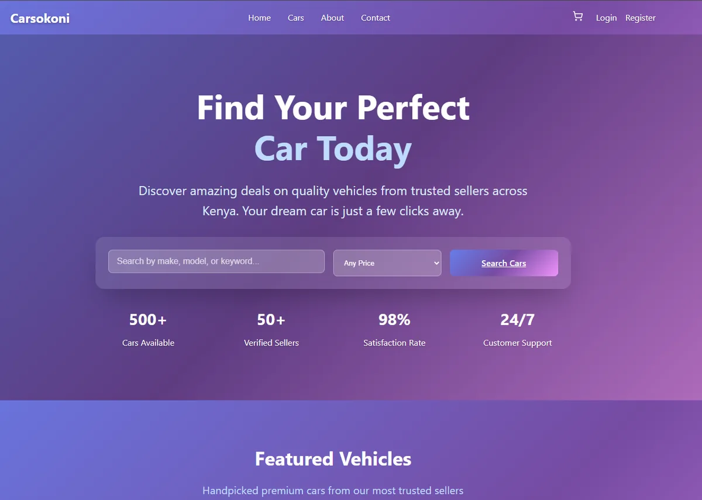

01 — MARKETPLACE
LIVE PROJECT PREVIEW ↗
E-COMMERCE · FRONTEND
Carsokoni
A car marketplace interface for exploring vehicles, searching listings, filtering options, and managing a shopping cart in a clean responsive experience.
ReactReduxCSS
View live project ↗PROJECT / 01